Five actionable preview-doc findings + one advisory. Sprint 9 a11y fix verified intact (visually-hidden <h2>Articles</h2> rendered by views-view-unformatted--articles--page-1.html.twig present in live DOM at all viewports). PC-13 correctly excludes card-content fluctuation between live and preview (different article sets) from fix candidates.
What I see different (plain English)
- The "active" pill (the "All" chip + the current-page "1" in pagination) is a darker, deeper blue on live than on preview. Live uses the deep-teal token (
#005AA0); preview uses the lighter brand teal (#1893B4). Visible at every viewport. Live's darker color is also the only one that passes the AA small-text contrast floor. - Card borders look noticeably darker on live than on preview. Live's card border is a warm-grey (~
#8E867A); preview's is the spec's pale hairline (#E5E1DC). Live's darker border is actually the only one that passes the AA UI-component contrast floor — so this finding requires a brief decision rather than a "fix live" reflex. - Article-card titles are slightly darker on live than on preview. Live H3 is
#1F1A14(ink-strong, the sitewide baseline since Sprint 13); preview H3 is#2A2520(ink). Same as the Sprint 17 H3-color finding — preview catches up to the live canonical. - The last two filter chips swap order between live and preview. Live: All / Automated Testing / Cypress / Open source / Talks. Preview: All / Automated Testing / Cypress / Talks / Open source. Cosmetic; preview-doc reorder.
- At mobile (375), preview chips are visibly shorter / less tappable than live chips. Live chip tap-height ~44 px; preview chip ~32 px. Both pass the 24×24 AA floor; only live hits the 44 px Apple HIG / WCAG 2.5.5 AAA target.
- The big rendered
Articles.page-title text sits ~9 px taller on preview than on live. Cosmetic only — same font, same line-height. Possibledisplay: inline-blockvsblocknuance. - Footer is richer on live (column headings rendered as large H3 text + more links). Sitewide carry — preview footer is a stripped reference; live is the canonical Drupal footer.
- Different articles in the grid. Live leads with "CTRFHub" (2026-04-27); preview leads with "Version 1.0 of Automated Testing Kit" (2023-11-20). Expected per PC-13 (views-listing content fluctuation); not a fix candidate.
Viewport 1280 × 800 (desktop)
DSSIM 0.502 · AE 7,345,370 pixels · 50.2% of pixels differ. Per-section: page-title DSSIM 0.166 / AE 6.4% · pagination DSSIM 0.152 / AE 5.2% · footer DSSIM 0.177 / AE 5.7%. Articles-view & grid: DSSIM ≈ 0.23 (high — content fluctuation per PC-13).
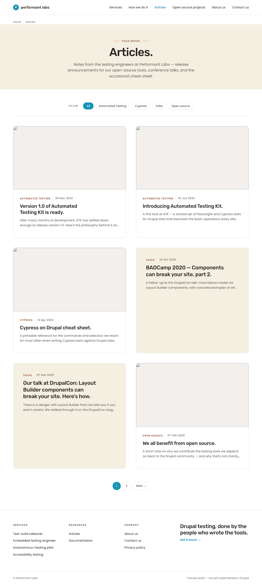
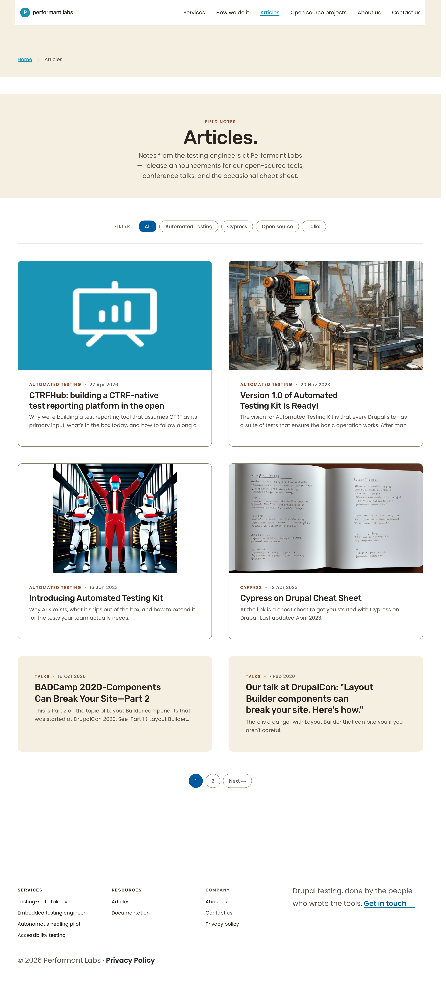
ImageMagick diff (red = where the pixels disagree)
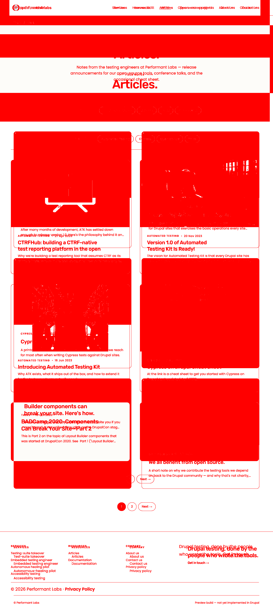
Side-by-side composite (live left, preview right)
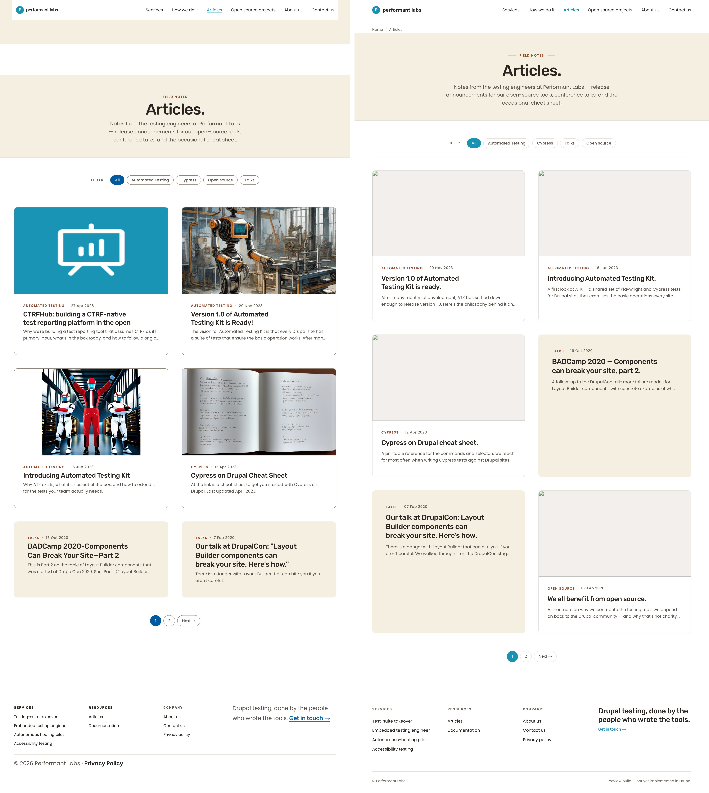
Viewport 768 × 1024 (tablet)
DSSIM 0.644 · AE 8,827,470 pixels. Per-section: page-title DSSIM 0.193 / AE 10.4% · pagination DSSIM 0.170 / AE 8.7% · footer DSSIM 0.187 / AE 6.8%.
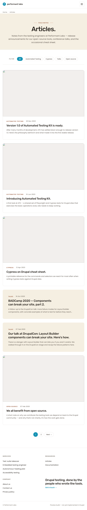
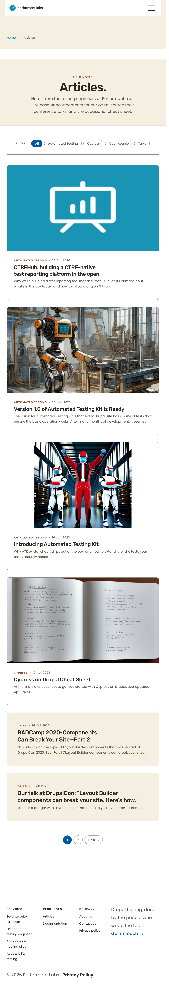
ImageMagick diff
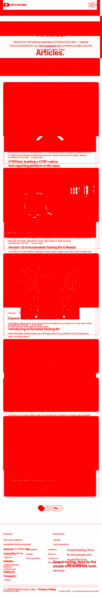
Composite

Viewport 375 × 667 (mobile)
DSSIM 0.577 · AE 3,474,390 pixels. Per-section: page-title DSSIM 0.250 / AE 17.5% · pagination DSSIM 0.213 / AE 18.0% (driven by F-NEW-18-A active-pill red disc + chip-padding height drift) · footer DSSIM 0.195 / AE 7.6%.
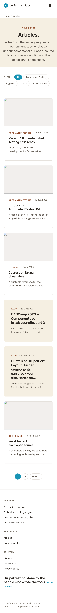
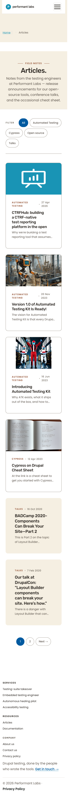
ImageMagick diff
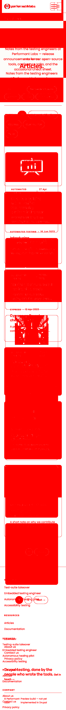
Composite
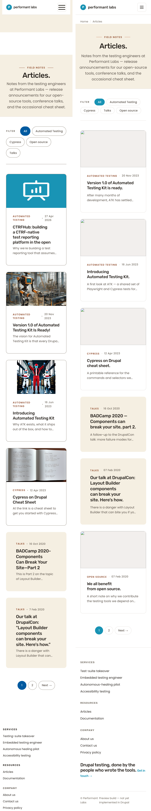
Per-section delta table
| Section | Viewport | Status | Description | Diff crop |
|---|---|---|---|---|
| Page-title (cream band) | 1280 | DELTA | Chip-order swap (last two); H1 rect height delta (cosmetic); lede wrap differs (no orphan). | |
| Page-title | 768 | DELTA | Same as 1280; chip-order swap remains. | 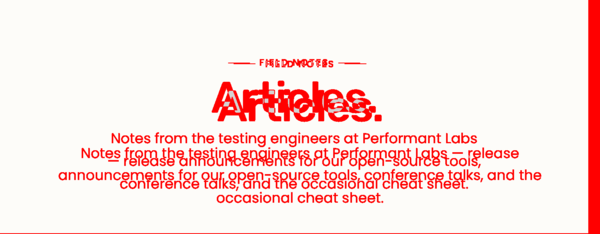 |
| Page-title + toolbar | 375 | REWORK | Chip mobile padding 9 px (preview) vs 15 px (live) — preview tap-height 32 px misses 44 px target. | 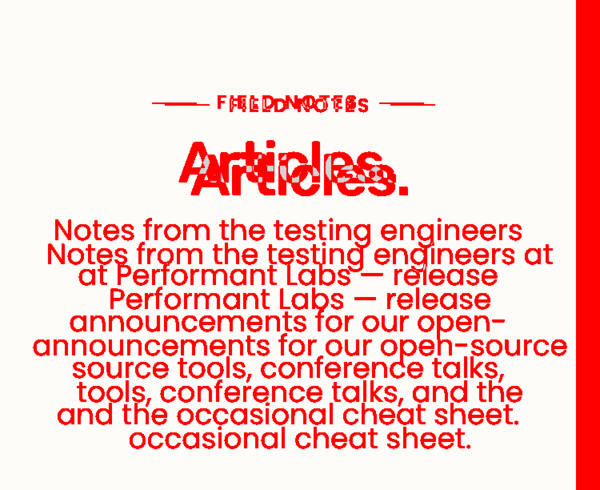 |
| Articles toolbar (chips) | all | REWORK | Active chip "All" bg: live #005AA0 vs preview #1893B4. Chip order: last two swapped. Mobile padding (at 375) per row above. |
Embedded in page-title crop above. |
| Article-card grid (chrome) | all | REWORK | Card border: live ~#8E867A (darker; AA-OK for 1.4.11) vs preview #E5E1DC (brief; AA-fail 1.4.11). Card H3 color: live #1F1A14 vs preview #2A2520. |
Visible in wipe-slider at every viewport. |
| Article-card grid (content) | all | MATCH (per PC-13) | 6 cards on both. Content differs (different article set). Not a fix candidate — views-listings fluctuate. | — |
| Pagination | 1280 | REWORK | Solid red disc on the "1" current-page pill — active bg color delta. F-NEW-18-A. | |
| Pagination | 768 | REWORK | Same as 1280. | |
| Pagination | 375 | REWORK | Same as 1280; pagination items 40–44 px high on both. | |
| Footer | 1280 | DELTA (sitewide carry) | Live H3 column headings vs preview H4. Footer richness divergence. F-NEW-16-H — sitewide, out of scope. | 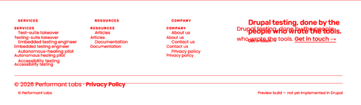 |
| Footer | 768 | DELTA (carry) | Same. | 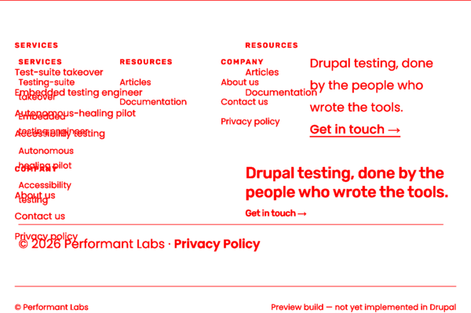 |
| Footer | 375 | DELTA (carry) | Same. | 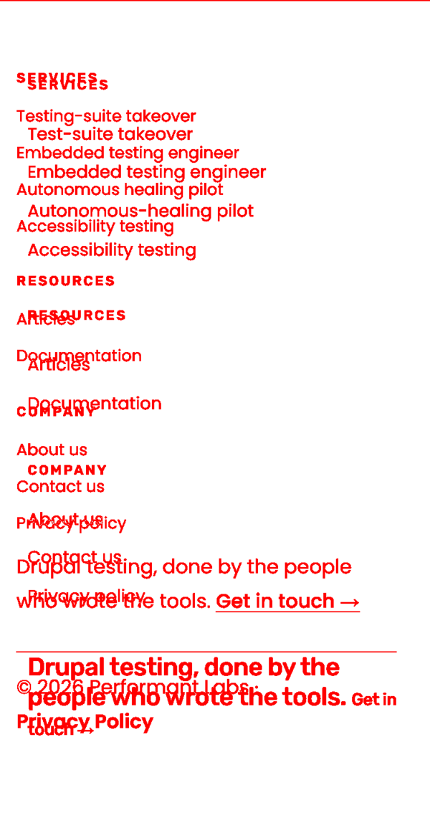 |
Findings catalog
F-NEW-18-A — Active-state color: live #005AA0, preview #1893B4
.chip.is-active AND .pagination .is-current. All three viewports.Preview's #1893B4 on white 14 px text ≈ 3.2:1 — marginally fails WCAG 1.4.3 small-text. Live's #005AA0 on white ≈ 7.2:1 — passes cleanly. Live is the a11y-correct value.
Remediation (recommended autonomous default): preview-doc change background: var(--primary) → background: var(--primary-deep) on both rules. Add brief note that active-pill background uses --primary-deep.
F-NEW-18-B — Card border color: live ~#8E867A (darker), preview #E5E1DC (brief --hairline) — operator decision needed
.article-card resting border. All three viewports.Live border #8E867A on white ≈ 3.4:1 → passes WCAG 1.4.11 non-text contrast (3:1 floor). Preview border #E5E1DC on white ≈ 1.5:1 → fails 1.4.11. Live is a11y-correct; preview matches the brief token.
Operator decision required:
- Option B (recommended): update brief
--hairlineto a darker value (live's#8E867Aor similar). Then preview matches both brief and live. Sitewide implication — verify other--hairline-using components. - Option A: update live
card.html.twigSDC border to#E5E1DC. Accepts the 1.4.11 marginal fail (sitewide allowlist may apply).
F-NEW-18-C — Card H3 color: live #1F1A14, preview #2A2520
Remediation: preview-doc update .article-card h3 a { color: #1F1A14; } (or add --ink-strong token to preview :root). One-line CSS edit.
F-NEW-18-D — Chip order: live All / Automated Testing / Cypress / Open source / Talks; preview swaps last two
.articles-toolbar chip order. All three viewports.Remediation: preview-doc — swap chip anchors at preview HTML lines 543 and 544 so order matches live taxonomy order.
F-NEW-18-E — Mobile chip padding: preview tap height ~32 px at 375, live ~44 px
.chip at @media (max-width: 767px) in preview only. 375 viewport.Both pass WCAG 2.5.8 (24×24 floor). Only live hits 2.5.5 AAA / Apple HIG 44 px target.
Remediation: preview-doc — add .articles-toolbar .chip { padding: 15px 16px; } inside preview's @media (max-width: 767px) block.
F-NEW-18-F (advisory) — Skip-link href: live #main-content, preview #main
a.skip-link href + <main> id. All viewports.Both work in-context. Live uses Drupal-canonical anchor.
Remediation: preview-doc — change preview href="#main" → #main-content AND <main id="main"> → id="main-content".
F-NEW-18-G (advisory) — Page-title H1 rect height: live 50 px, preview 59 px at 1280
Both render font-size: 56px / line-height: 58.8px (PASS brief). The 9 px rect-height delta is likely a display: inline-block vs block nuance. Low priority.
Cycle 2..N recommendations
- Cycle 2 — Preview-doc batch. Branch
aa/pl-sprint-18-cycle-2-preview-doc. Bundle F-NEW-18-A + C + D + E + F (advisory). Five edits insidedocs/pl2/Previews/articles.html. Re-runscripts/sprint-18-cycle-1-*.mjsto verify per-section DSSIM drops materially. - Cycle 3 — F-NEW-18-B card border decision. Operator-gated. Branch
aa/pl-sprint-18-cycle-3-card-border. Recommendation: Option B (update brief to a darker hairline that satisfies 1.4.11; cascade preview + all card-using pages). Sitewide implication. - Deferred: F-NEW-18-G (H1 rect height — cosmetic), F-NEW-16-H (footer column heading H3/H4 — sitewide carry). Not Sprint 18 scope.
Sprint 9 a11y fix verification
The Sprint 9 fix added <h2 class="visually-hidden">Articles</h2> to views-view-unformatted--articles--page-1.html.twig to restore the H1 → H2 → H3 heading hierarchy on this page (cards emit H3 but the page lacks a section-level H2 between the page-title H1 and the cards). Verified intact on live at all three viewports via DOM probe: h2.visually-hidden.h3.menu-block__title with textContent="Articles" present at y=827 (1280) / y=827 (768) / y=941 (375) — between the page-title H1 and the first card H3. WCAG 1.3.1 PASS.
Artefacts
scripts/sprint-18-cycle-1-capture.mjsscripts/sprint-18-cycle-1-measure.mjsscripts/sprint-18-cycle-1-diff.mjsscripts/sprint-18-cycle-1-probe.mjsdocs/pl2/handoffs/screenshots/sprint-18-cycle-1/— 6 full-page PNGs, 5 per-section diffs × 3 VPs × 4 metrics, composites, thumbnails,measurements.json,diff-results.json,probes.json.